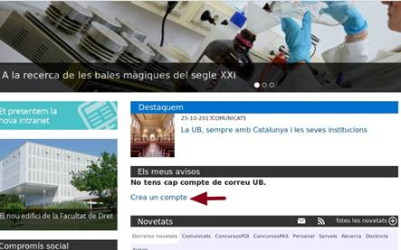
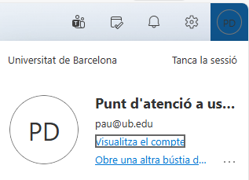
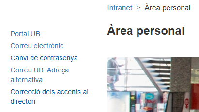

Zoom Campus CRAI
Cualquier cosa que tenga que ver con zoom, cursos, campus, etc redigirir al CRAI Telefono - 934 034 731 Mail - udcrai@ub.edu
Cualquier cosa que tenga que ver con zoom, cursos, campus, etc redigirir al CRAI Telefono - 934 034 731 Mail - udcrai@ub.edu
Tengo que seguir los pasos que pone en el siguiente enlace para probar que sea la dockstation e intentar repararla: https://aticdocs.ub.edu/display/PAU/Procediment+Dock+Station
Se passa el mensaje que dejo a continuacion: L'activació d'una roseta es pot tramitar des de https://suport.ub.edu/servicedesk/customer/portal/61/create/611
Los ateneu no tienen accesos a nada que no sea el correo, solo se puede acceder a demas servicios si en el auten salen como CEL en los permisos de abajo del todo. En caso de saber si tienen o no accesso a su correo antiguo @ub.edu, solo podran acceder los que tengan como modelo acabado en J4
Cuando llegan correos con altas con los excel, tengo que hacer un tiquet de solicitud, adjuntar el excel que me han pasado y pasarlo a gestion de servicios
Problemas que tengan que ver con sharepoint se pasan a zona, estilo necesito dar acceso a carpetas y demas
Si llega alguien pidiendo que necesita acceder a un PC, solo necesito su correo y el IDPAU del ordenador, hago tiquet de solicitud de alta /baja/cambio de te lugar y lo paso a zona
Las impresoras se puede ver si son de cua retinguda o directa en el CMDB: si pone algo del estilo que son T1, son de cola directa. T2 o T3 son de cola reteniguda
Eduroam: si no sirve olvidar la red, provar a reinciar i volver a olvidar
Revistas lo llevan en CRAIUSU@ub.edu
Si dicen que es problema de que no aparece la impressora, es mejor poner el IDPAU i apuntar la impressora en la descripción
Si falla dock despues de procedimiento y tengo que pasarlo, mirar si esta en garantía el ordenador para pasarlo a proveedor, si no a zona
A1 - Son associats, només tenen l'online A3 - Son d'escriptori
Rediseños web no hacemos solo ofrecemos hosting
Para canviar la MAC Address, voy al Pandora y lo busco por Etiqueta con el IDPAU, le doy a Opciones, sustituir y pongo la nueva MAC. Copiar antes la vieja para ponerla en el tiquet
Si piden mover impresoras, se hace tiquet de solicitud y se mueve a zona
Si vienen a pedir accesso un PDI después de que se acabe el contrato, le paso el enlace de personal externo o colaborador
Para hacer los PVI, le doy a reenviar, menciono a "Oficina PAU", pongo mi nombre en el nuevo mail, pongo "PVI" y lo envio
Los correos que llegan con fechas avisando de caidas, se hace reunión, se pone que llegue solo a oficina PAU, pongo PVI de tema, ajusto las horas correctas y en el reloj de arriba le doy a no recordar
Para ver las rosetas se pueden ver en el Pandora - Caotic - Rastreig Roseta
SAP/Incidències - PAU - Confluence - Enlace para incidencais con el SAP - https://aticdocs.ub.edu/pages/viewpage.action?pageId=134054460
El enlace para instal·lar los office es este, tarda como 1 hora en total en hacerlo todo, sobretodo el pasar de un ordenador a otro - https://aticdocs.ub.edu/display/PAU/Office+2024
Sample Description
Sample Description
Sample Description
Bon día, S'ha reiniciat el doble factor correctament i podrà tornar a configurar-lo en uns minuts. Trobarà les instruccions en el següent enllaç: https://www.ub.edu/portal/web/iub/nuvol-2fa
Buenos días, Se ha reiniciado el doble factor correctamente y podrá volver a configurarlo en unos minutos. Encontrará las instrucciones en el siguiente enlace: https://www.ub.edu/portal/web/iub/nuvol-2fa
Good morning, The two-factor has been successfully reset and you will be able to configure it again in a few minutes. You will find the instructions at the following link: https://www.ub.edu/portal/web/iub/nuvol-2fa
Bon dia, En aquest cas, cal que vagi a intranet.ub.edu i accedeixi a la pestanya Àrea Personal, a la secció Correu UB: Adreça Alternativa. [Imatge] Un cop a dins, ha de prémer el botó blau que diu Dades de contacte del correu UB i dins podrà canviar el àlies, que es el nom que apareix en els correus.
Buenos días, En este caso, hace falta que vaya a intranet.ub.edu y acceda a la pestaña Área Personal, a la sección Correo UB: Dirección Alternativa. [Imagen] Una vez adentro, tiene que pulsar el botón azul que dice Datos de contacto del correo UB y dentro podrá cambiar el alias, que se el nombre que aparece en los correos.
Good morning, In this case, you must go to intranet.ub.edu and access the Personal Area tab, in the UB Mail section: Alternative address. [Image] Once inside, you must press the blue button that says Contact Data of the UB mail and inside you can change the alias, which is the name that appears in the emails.
Bon día, En aquest cas, haurà de consultar-ho amb el Servei d’Atenció a l’Estudiant (SAE): 93 355 60 00 sae@ub.edu
Buenos días, En este caso, tendrá que consultarlo con el Servicio de Atención al Estudiante (SAE): 93 355 60 00 sae@ub.edu
Good morning, In this case, you should consult with the Student Support Service (SAE): 93 355 60 00 sae@ub.edu
Bon dia, Necessitaria l'IDPAU/identificador de la impressora, l'IDPAU del teu ordinador i un telèfon de contacte.
Buenos días, Necesitaría el IDPAU de la impresora, el IDPAU de tu ordenador y un teléfono de contacto.
Good morning, I would need the printer IDPAU/identificador, your computer IDPAU and a contact phone number.

Crear Correu

Afegir Bustia

Alies